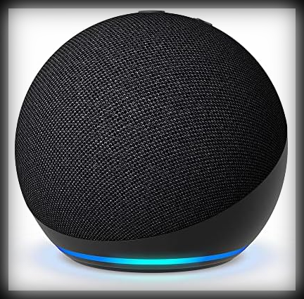

[rafael@website ~]$ tree /home/rafael/tech
.
├── CienciaDados
├── IA
├── IOT
├── RealidadeAumentada
└── RealidadeVirtual
1 diretório, 5 arquivos
I.O.T., ou Internet das Coisas, é uma área da tecnologia que vê
integrar dispositivos do dia a dia, como portas, luzes e relógios, e torná-los "inteligentes", conectando-os
a internet, e servindo funções de automatização. Também é presente na forma de dispositivos assistentes, como
o Google Home, ou Amazon Echo com Alexa, que respondem a comandos recebidos por via de um microfone.
Ainda que existam certas ressalvas e medos com essas tecnologias, como ameaça de espionagem por esses
dispositivos, ou que circuítos eletrônicos acabe afetando o funcionamento de sua casa como um todo,
grande parte das pessoas tendem a relevar estes problemas pela utilidade desses aparelhos.

(Assistente para casa, Amazon Echo Dot)